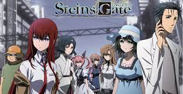

What is ERASED all about? This show follows protagonist Satoru Fujinuma, a 29-year-old manga artist. He has a mysterious power called Revival which allows him to go back in time to prevent accidents and tragedies, an ability which he has used to save many lives. Things take a turn, however, when he is accused of murder, only to find himself sent way back in the past, 18 years to be precise. He realizes there that the murder in the future may be related to the killing of one of his old classmates, and the story follows him as he tries to find the truth in the past while saving his classmate and the people he cares about in the present.
Vinland Saga follows the Icelandic mercenary Young Thorfinn, a character whose life consists of war and death. He finds himself in the center of an ever-growing conflict between England and the Danes, one that becomes worse as time goes on. In this chaotic mess, Thorfinn looks to take revenge on the man who murdered his father, Askeladd. This sprawling epic tale thrusts viewers directly in a blood-drenched world of violence and combat, one that is heavily inspired by Nordic culture while combining elements of family and philosophy into its engrossing plot
Okabe Rintarou, a university student who refers to himself as Crazy Mad Scientist Hououin Kyouma and his lab's members work on a microwave device that can transfer messages to the past. Without getting captured, they should get it working in order to beat the evil organization, SERN and stop their evil plans.
Fate/Zero is a Japanese light novel written by Gen Urobuchi, illustrated by Takashi Takeuchi, and is a prequel to all routes in Type-Moon's visual novel, Fate/stay night. Fate/Zero is set ten years before the events of Fate/stay night, and tells the story of the Fourth Holy Grail War, a secret magical tournament held in Fuyuki City, Japan where seven mages known as Masters summon Servants, reincarnations of legendary souls and heroes from all across time, where they fight in a deadly battle royale where the winner obtains the Holy Grail, a magical legendary chalice capable of granting wishes. The main protagonist, Kiritsugu Emiya, the foster father of Fate/stay night's protagonist, Shirou Emiya, is known as a merciless mage killer who joins the tournament on behalf of his wife's family, the Einzberns.
The suspense horror/dark fantasy story is set in Tokyo, which is haunted by mysterious "ghouls" who are devouring humans. People are gripped by the fear of these ghouls whose identities are masked in mystery. An ordinary college student named Kaneki encounters Rize, a girl who is an avid reader like him, at the café he frequents. Little does he realize that his fate will change overnight. personally i love this anime!!!!